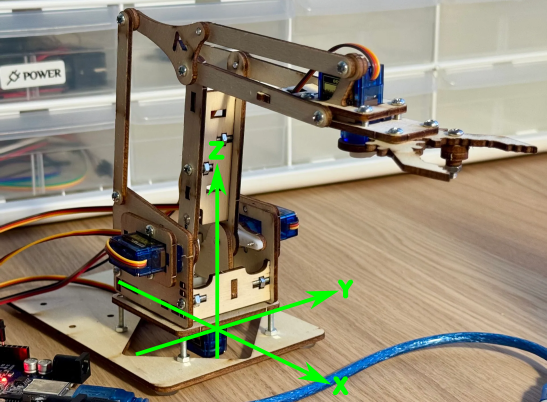
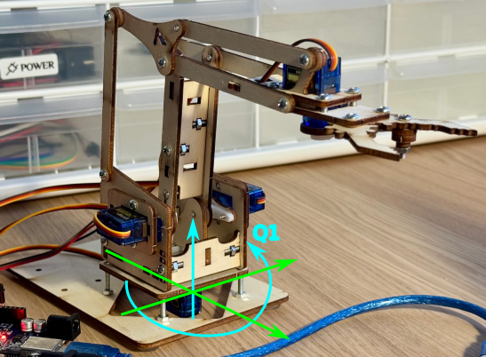
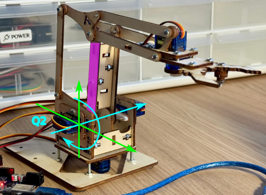
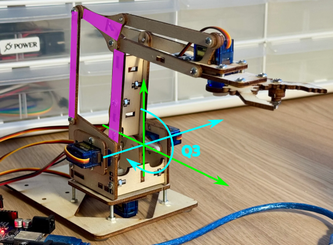
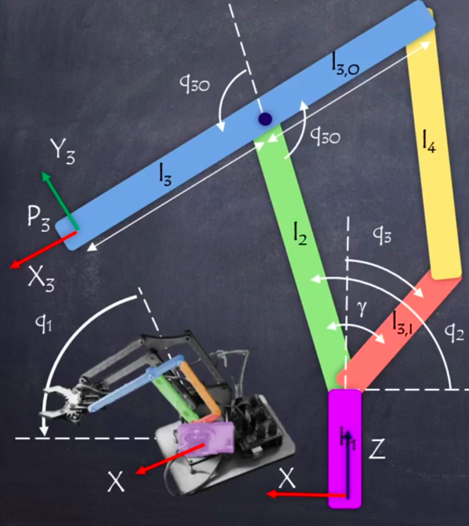
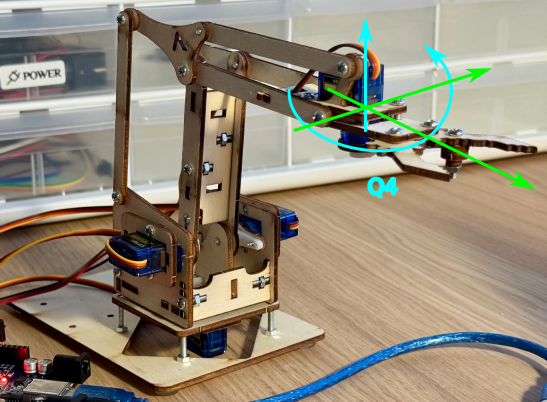
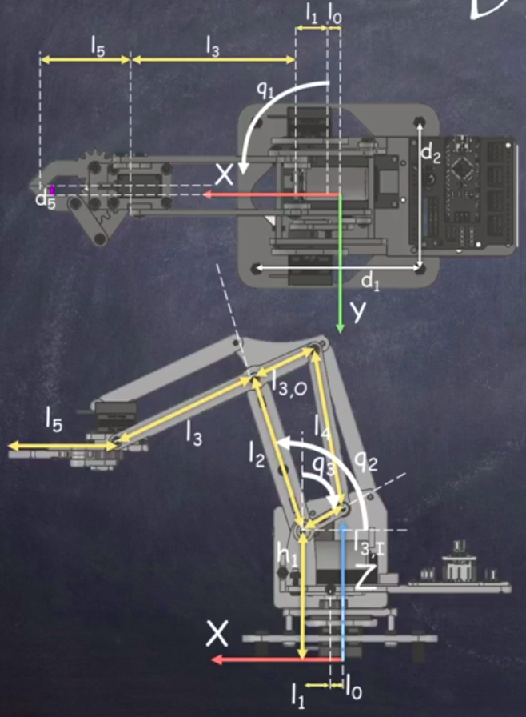

Clase 4 - Fundamentos Matemáticos (FK/IK)
Objetivos de la clase
- Entender los conceptos de cinemática directа e inversа.
- Implementar cálculos de FK y IK en Python.
- Aplicar estos conceptos para controlar un manipulador robótico.
Armado del robot
Para el armado del robot puedes seguri la guia oficial pagina oficial
Posición de home del robot
La posición de home del robot es la posición inicial desde donde se inicia el movimiento. Para este caso tomamos el punto en contacto con el suelo con el eje X apuntando hacia adelante, eje Y apuntando hacia la izquierda y eje Z apuntando hacia arriba.

Para lograr esa posicion tenemos los 4 servos con las siguientes disposiciones
- Servo q1: 90°
- Servo q2: 90°
- Servo q3: 90°
- Servo q4: 0°
La articulación q1 mueve la base del robot sobre el eje Z.

La articulación q2 es el hombro del robot y mueve el brazo.

La articulación q3 es el codo del robot, mueve el antebrazo mediante un mecanismo de 4 barras.


La articulación q4 es la muñeca del robot, mueve la garra.

DImensiones necesarias para el analisis cinemático
Para el analisis cinemático necesitamos conocer las dimensiones de los eslabones del robot, para este caso tenemos:
